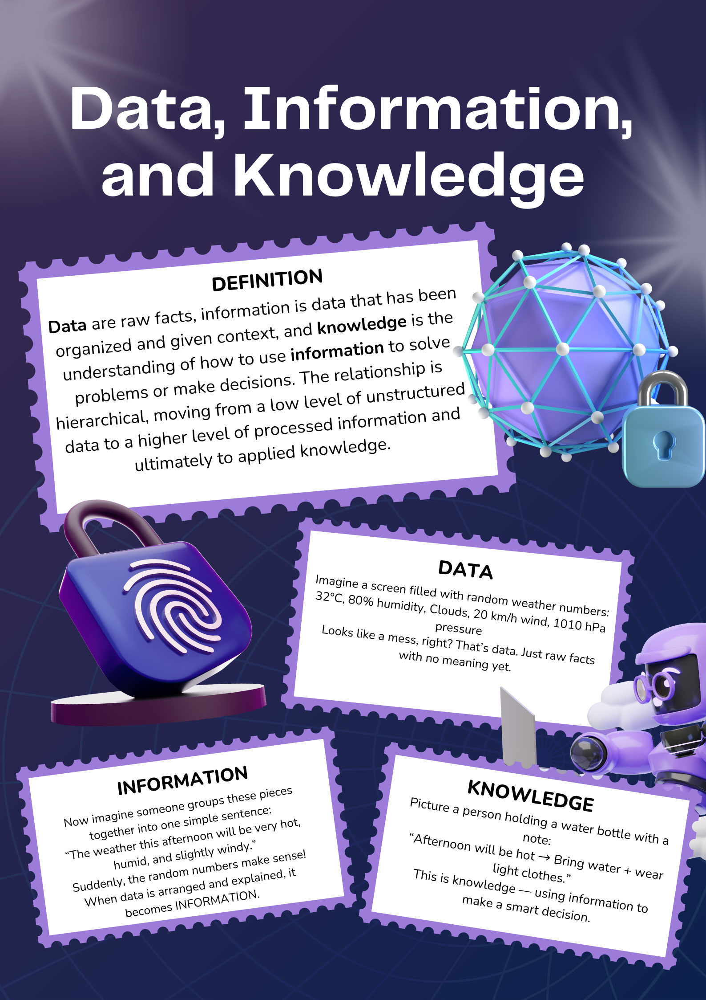
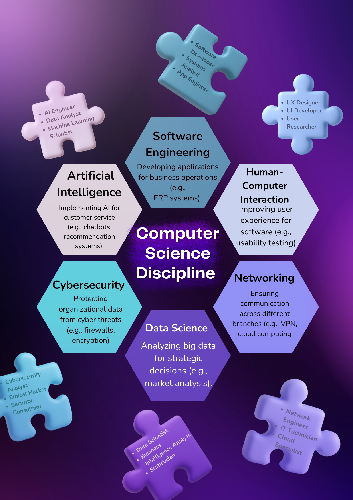
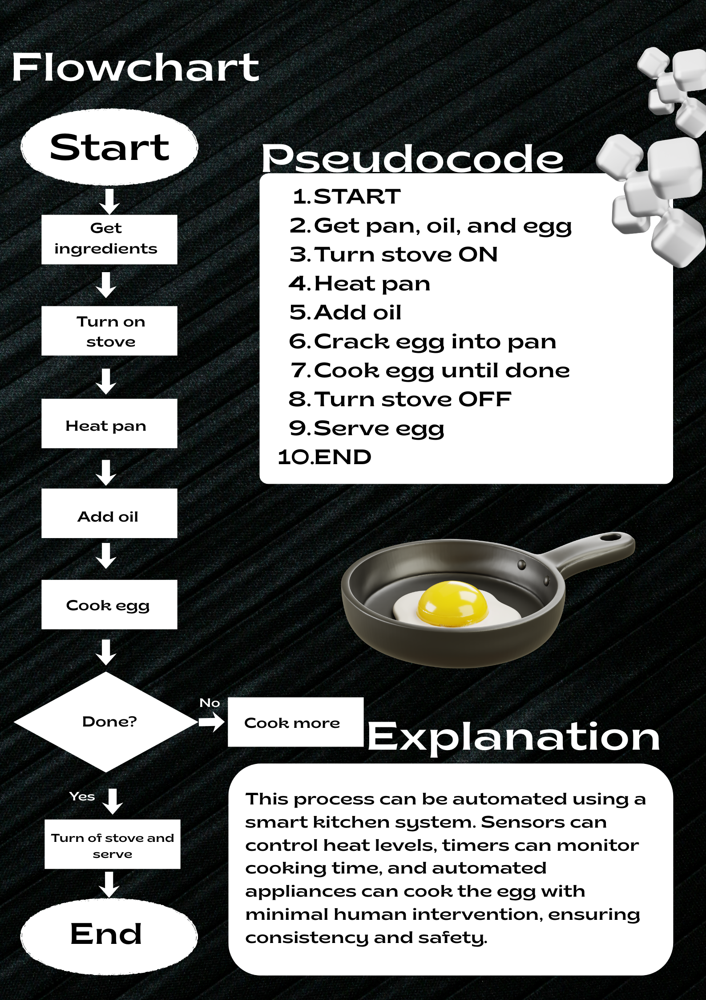
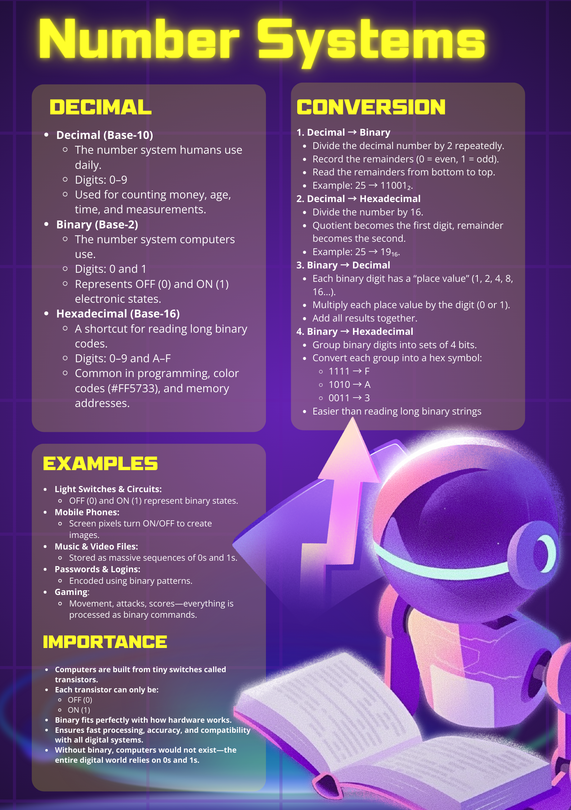
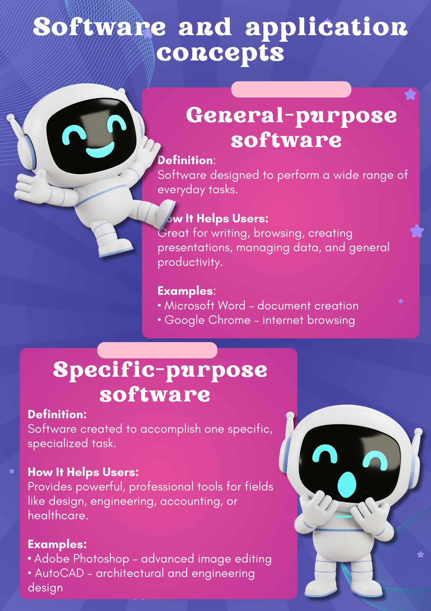
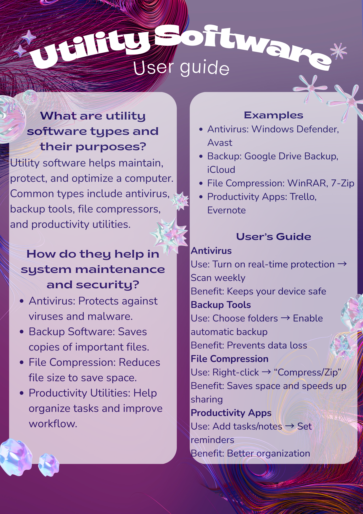
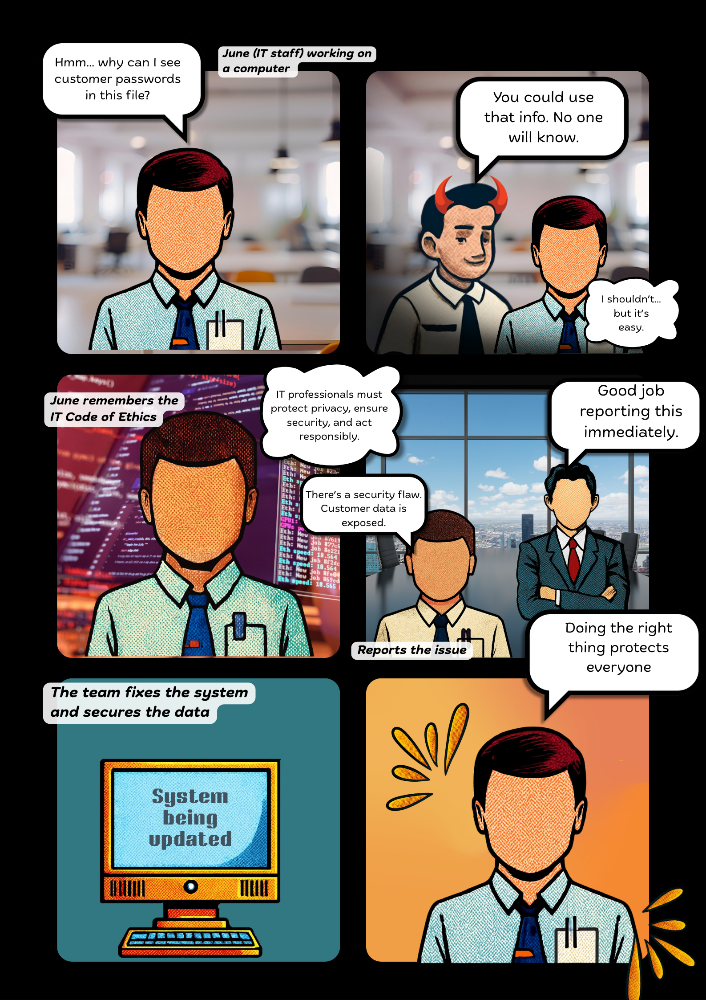

Lesson 1: Data, Information, and Knowledge

Data, information, and knowledge are interconnected concepts in information systems. Data refers to raw, unprocessed facts, while information is data that has been processed and given meaning. Knowledge is derived from analyzing information and gaining understanding or insights. For example, temperature readings (data) can be processed to show an average temperature (information), which can then guide decisions about planting crops (knowledge).Lesson 2: Areas of Computer Science

Computer Science is a broad discipline with areas such as Artificial Intelligence, Software Engineering, Cybersecurity, Networks, Databases, and Human-Computer Interaction. Each area contributes to technology and society in different ways, improving efficiency, security, and usability. AI focuses on machine learning and intelligent systems, Software Engineering emphasizes coding and software design, and Networking involves understanding protocols and data transmission.
Lesson 3: Uses of Computer Systems
Every morning, Mia, a young nurse in a busy city hospital, starts her day by logging into the hospital’s computer system. The moment she types in her credentials, the screen displays all her patients for the day, complete with their medical history, allergies, and ongoing treatments. Instead of flipping through thick folders or searching for missing charts, all the information she needs appears instantly. As she walks from room to room, she carries a small tablet that automatically updates every time she enters new observations, allowing doctors in other departments to see real-time changes without calling her. Meanwhile, the lab team uses automated machines connected to the hospital network to analyze blood samples, and the results appear on Mia’s tablet seconds later. Even Mia’s friend in the billing section relies on computers to process payments accurately and fast. Throughout the day, cybersecurity systems silently work in the background, keeping patient information safe from hackers and making sure the hospital runs smoothly. By the end of her shift, Mia realizes how computers helped her save time, avoid mistakes, and focus more on comforting and caring for her patients rather than drowning in paperwork. Through her experience, she learns that technology isn’t just about machines—it’s about helping people work smarter, serve others better, and create a safer environment for those who need help the most.
Moral: Technology with compassion improves lives.
Lesson 4: Algorithms & Flowcharts

Algorithms provide step-by-step solutions to problems, and tools like pseudocode and flowcharts aid programmers in designing and visualizing these solutions. Pseudocode is a text-based representation of logic, while flowcharts use diagrams to illustrate processes, making complex algorithms easier to understand.
Lesson 5: Number Systems

Number systems, such as binary, decimal, and hexadecimal, are essential in computing. Converting between these systems allows humans and computers to communicate efficiently. Binary is particularly important because computers operate using two states, represented as 0s and 1s.
Lesson 6: Software Types

Software can be classified as general-purpose or specific-purpose. General-purpose software, such as Microsoft Word or Excel, caters to a broad range of tasks, while specific-purpose software, like AutoCAD or QuickBooks, is designed for particular applications. Both types of software address different user needs.
Lesson 7: Computer Hardware
Computer hardware operates through the Input-Process-Output-Storage (IPOS) cycle. Input devices like keyboards and mice capture data, the CPU processes it, output devices display results, and storage components save data for future use. Internal components such as RAM, CPU, and motherboard support processing, while external devices like printers and monitors facilitate interaction.
Lesson 8: Utility Software

Utility software helps maintain and secure computer systems. Antivirus programs protect against malware, backup software ensures data recovery, file compression tools save storage space, and productivity applications enhance workflow. These utilities collectively support system performance, security, and efficiency.
Lesson 9: Databases

Databases store structured data in tables composed of rows and columns, allowing efficient organization and retrieval. Unlike traditional file storage, databases reduce redundancy, improve data integrity, and support multiple users simultaneously, making them essential for modern data management.
Lesson 10: Computer Networks

Computer networks connect devices to share resources and information. Topologies like star, bus, ring, and mesh define network structure, while LANs, WANs, and MANs vary in scope. Networking tools such as routers, switches, cables, and firewalls enable communication, security, and management across systems.
Lesson 11: Ethics & Security

Ethics, security, and privacy are critical in IT. Ethical concerns include hacking, piracy, and data misuse. Security measures protect sensitive information, while privacy ensures responsible handling of personal data. The IT Code of Ethics provides guidance for professional and responsible conduct in technology use.
Lesson 12: HTML Programming
HTML is used to structure web content using tags such as h1 for headings, p for paragraphs, a for links, and img for images.
Lesson 13: CSS Programming
CSS enhances HTML by controlling styles like color, layout, and fonts. With syntax in the form of selectors and property-value pairs, CSS improves the look, feel, and usability of web pages.
Lesson 14: Future of Computing
In the year 2045, technology had become part of everyday life. Generative AI was no longer just a tool that analyzed data—it could create stories, images, music, and even personalized lesson plans. Unlike traditional AI, which only followed rules and patterns, Generative AI could imagine new ideas and produce original content. Mika, a college student, started her day with the help of her AI assistant. The system used data analytics to study her habits—what time she woke up, which subjects she struggled with, and how she learned best. Based on this data, the AI created a custom study schedule and suggested review materials, helping Mika learn faster and more efficiently. Outside of school, data analytics was transforming many industries. Hospitals used it to predict diseases early, businesses used it to understand customer needs, and cities used it to reduce traffic and save energy. Everything became smarter because data was collected, analyzed, and used to make better decisions. However, not everything felt perfect. Mika began to worry about ethical issues. The AI knew a lot about her personal life. Who owned this data? What if the system was biased or made unfair decisions? Some of her friends lost jobs because AI systems replaced human workers. One day, Mika’s professor reminded the class that technology must be used responsibly. Generative AI and data analytics should help people—not control them. Rules about privacy, fairness, and transparency were needed to protect society. By the end of the day, Mika realized that the future of computing was powerful and helpful, but it also required human values. When used ethically, Generative AI and data analytics could improve lives while respecting people’s rights and dignity.